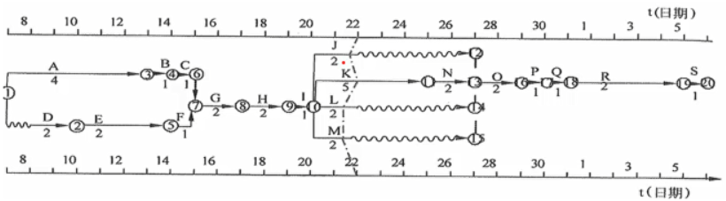
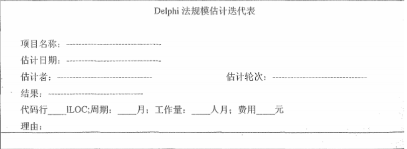
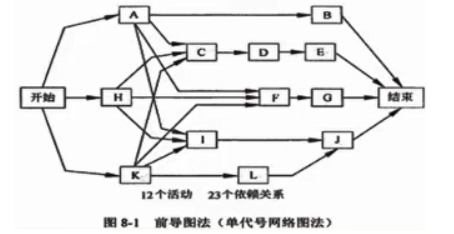
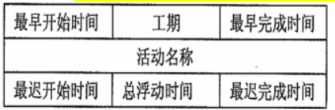
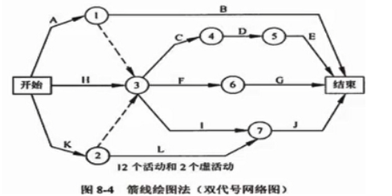
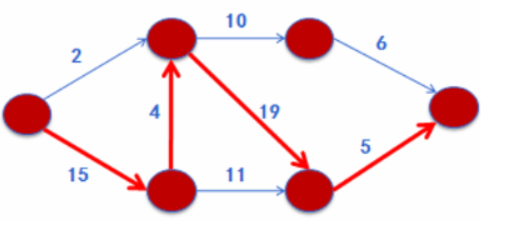
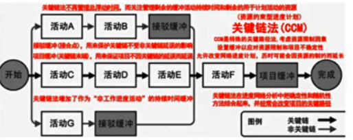

分值：3分
综合图谱

资源日历
- 表明每种具体资源的可用工作日和工作班次的日历
排列活动顺序的工具
- 横道图（也叫甘特图）
- 里程碑图
- 项目进度网络图
- 时标逻辑图（也叫时标网络图）
- 实线表示活动，实线的水平投影表示活动的持续时间
- 虚线表示虚活动，不占时间，所以垂直画
- 波浪线表示活动和紧后活动之间的自由浮动时间

确定依赖关系
- 强制性依赖关系：硬逻辑关系
- **选择性依赖关系：**首选逻辑关系，软逻辑关系
- **外部依赖关系：**项目活动与非项目活动之间的依赖关系
- **内部依赖关系：**项目活动之间的紧前关系
活动持续时间估计的方法
- LOC：所有可执行的源代码行数
- Delphi法

- 类比估算法：适合评估一些与历史项目相似的项目，通过新项目与历史项目的比较得到规模估计
- 等价代码行 = （重新设计百分比+重新编码百分比+重新测试百分比）/ 3 x 已有代码行
- 参数估算法：基于历史数据和项目参数，使用某种算法来计算成本和工期
- 储备分析：
- 应急储备：也叫缓冲时间，与“已知-未知”风险相关，可以通过定量分析来确定，比如蒙特卡洛模拟法（随机模拟法）
- 管理储备：“未知-未知”风险，不包含在进度基准中，用来应对项目范围中不可预见的工作。管理储备可能需要变更进度基准
- 三点估算（PERT）
- 乐观时间To
- 最可能时间Tm
- 悲观时间Tp
- 公式：
- 活动持续时间 =（最乐观时间+4 * 最可能时间+最悲观时间）/ 6
- 持续时间标准差=（乐观时间-悲观时间）/ 6
制定进度计划的方法
前导图PDM（单代号网络图）
- 节点表示活动，箭线表示活动之间的关系

- 节点的时间包含：
- 最早开始时间（ES）
- 最早完成时间（EF）：EF=ES+工期估算
- 最迟开始时间（LS）
- 最迟完成时间（LF）：LF=LS+工期估算
- 公式：
- 总浮动时间 = LS-ES = LF-EF
- 自由浮动时间= min（后一节点的ES）- EF

箭线图（双代号网络图）
- 箭线表示活动，活动之间用节点连接
- 有虚活动（不占时间和资源）

关键路径法CPM
- 关键路径是工期最长的路径
- 在网络图中寻找关键路径，关键路径可能有多条，也在不断变化中

关键链法CCM
- 引入了缓冲和缓冲管理概念
- 项目缓冲：放在关键链末端的缓冲
- 接驳缓冲：放置在非关键链和关键链的结合点
- CCM重点管理剩余的缓冲持续时间和剩余的活动连持续时间之间的配置关系，不关注关键路径的总浮动时间

进度控制
需要关注的内容
- 判断项目进度的当前状态
- 对引起进度变更的因素加以影响，使其向有利的方向发展
- 判断项目进度是否已经发生变更
- 当变更发生时，按照变更控制流程进行处理
分析进度偏差
- 分析产生进度偏差的工作是否为关键活动
- 分析进度偏差是否大于总时差
- 分析进度偏差是否大于自由时差
- 项目进度计划的调整
进度压缩的方法
- 赶工，投入更多而资源或增加工作时间，以缩短关键活动的工期
- 快速跟进，并行施工，以缩短关键路径的长度
- 使用高素质的资源或经验丰富的人员
- 减小活动范围或降低活动要求
- 改进方法或技术，以提高生产效率
- 加强质量管理，及时发现问题，减少返工，缩短工期
资源平衡和优化
- 资源平衡往往导致关键路径改变，通常是延长
- 资源平滑不会改变关键路径，完工日期不会延迟，活动只在其自由浮动时间和总浮动时间内延迟，资源平滑可能无法实现所有资源的优化